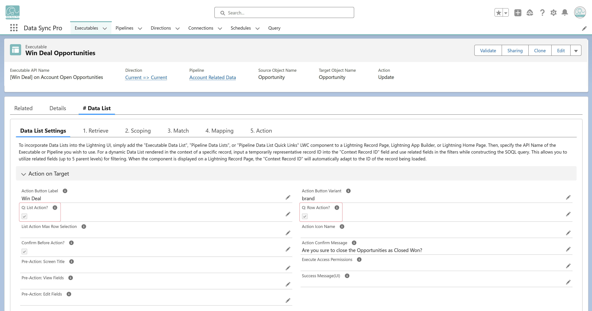

Yes. In the Action on Target section of the Executable:
List Action? – Enable to make the action available for multiple selected records.
Row Action? – Enable to make the action available for individual records through row actions.
You can enable either option—or both—depending on how you want users to trigger the action.
